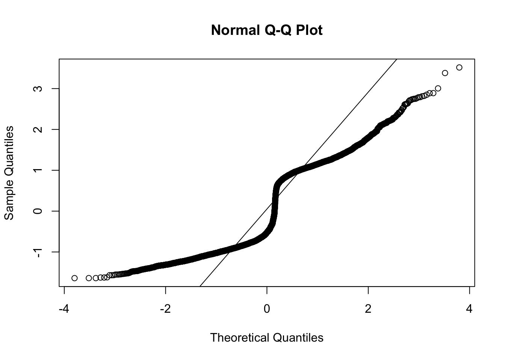

9_cheek_analysis
Last updated: 2020-09-07
Checks: 7 0
Knit directory: RILEY_Hons/
This reproducible R Markdown analysis was created with workflowr (version 1.6.2). The Checks tab describes the reproducibility checks that were applied when the results were created. The Past versions tab lists the development history.
Great! Since the R Markdown file has been committed to the Git repository, you know the exact version of the code that produced these results.
Great job! The global environment was empty. Objects defined in the global environment can affect the analysis in your R Markdown file in unknown ways. For reproduciblity it’s best to always run the code in an empty environment.
The command set.seed(20200903) was run prior to running the code in the R Markdown file. Setting a seed ensures that any results that rely on randomness, e.g. subsampling or permutations, are reproducible.
Great job! Recording the operating system, R version, and package versions is critical for reproducibility.
Nice! There were no cached chunks for this analysis, so you can be confident that you successfully produced the results during this run.
Great job! Using relative paths to the files within your workflowr project makes it easier to run your code on other machines.
Great! You are using Git for version control. Tracking code development and connecting the code version to the results is critical for reproducibility.
The results in this page were generated with repository version b073fde. See the Past versions tab to see a history of the changes made to the R Markdown and HTML files.
Note that you need to be careful to ensure that all relevant files for the analysis have been committed to Git prior to generating the results (you can use wflow_publish or wflow_git_commit). workflowr only checks the R Markdown file, but you know if there are other scripts or data files that it depends on. Below is the status of the Git repository when the results were generated:
Ignored files:
Ignored: .Rproj.user/
Note that any generated files, e.g. HTML, png, CSS, etc., are not included in this status report because it is ok for generated content to have uncommitted changes.
These are the previous versions of the repository in which changes were made to the R Markdown (analysis/9_cheek_analysis.Rmd) and HTML (docs/9_cheek_analysis.html) files. If you’ve configured a remote Git repository (see ?wflow_git_remote), click on the hyperlinks in the table below to view the files as they were in that past version.
| File | Version | Author | Date | Message |
|---|---|---|---|---|
| Rmd | b073fde | RileyFerguson | 2020-09-07 | riley finding model of best fit |
| html | 67b2af1 | RileyFerguson | 2020-09-07 | Build site. |
| Rmd | ca55bb7 | RileyFerguson | 2020-09-07 | riley starting adult happy/angry cheek |
| html | f0b141b | RileyFerguson | 2020-09-07 | Build site. |
| Rmd | 411f8d0 | RileyFerguson | 2020-09-07 | riley is starting adult cheek analysis |
| html | 57eb8f8 | RileyFerguson | 2020-09-07 | Build site. |
| Rmd | 432f758 | RileyFerguson | 2020-09-07 | Riley making tiny changes |
| html | 97131ce | Your Name | 2020-09-07 | Build site. |
| Rmd | 88d13a7 | Your Name | 2020-09-07 | child cheek happy angry models |
| html | 49c2d7c | Your Name | 2020-09-04 | Build site. |
| html | 473747c | Your Name | 2020-09-04 | Build site. |
| Rmd | 420b255 | Your Name | 2020-09-04 | code check CHEEK analysis |
load packages
library(tidyverse)
library(here)
library(lme4)
library(lmerTest)
library(broom.mixed)
library(pixiedust)
library(beepr)read in data
df <- read_csv(here("data", "adult_child_combined", "zdiff_binscreened.csv"))Parsed with column specification:
cols(
pp_no = col_character(),
model = col_character(),
emotion = col_double(),
trial = col_character(),
muscle = col_character(),
bin = col_character(),
zdiff = col_double()
)fix data types
The emotion variable below is numbers so not sure how the emotion %in% c(happy, angry) was working. Add emo variable with emotion labels
df$emotion <- as.factor(df$emotion)
levels(df$emotion)[1] "121" "131" "232" "323" "424" "434" "525" "535"df <- df %>%
mutate(emo = case_when(emotion == 121 ~ "happy",
emotion == 323 ~ "angry",
emotion == 424 ~ "fear",
emotion == 525 ~ "sad",
emotion == 131 ~ "happy",
emotion == 232 ~ "angry",
emotion == 434 ~ "fear",
emotion == 535 ~ "sad"))
df <- df %>% mutate_if(is.character, as.factor)
glimpse(df)Rows: 61,480
Columns: 8
$ pp_no <fct> pp401, pp401, pp401, pp401, pp401, pp401, pp401, pp401, pp401…
$ model <fct> adult, adult, adult, adult, adult, adult, adult, adult, adult…
$ emotion <fct> 131, 131, 131, 131, 131, 131, 131, 131, 131, 131, 131, 131, 1…
$ trial <fct> trial1, trial1, trial1, trial1, trial1, trial1, trial1, trial…
$ muscle <fct> brow, brow, brow, brow, brow, brow, brow, brow, brow, brow, c…
$ bin <fct> diff_bin1, diff_bin10, diff_bin2, diff_bin3, diff_bin4, diff_…
$ zdiff <dbl> 0.133992486, -0.672344142, 0.034300886, -0.126145600, -0.1985…
$ emo <fct> happy, happy, happy, happy, happy, happy, happy, happy, happy…CHEEK happy-angry child
Make cheek HA child df
just happy/angry child face for cheek
HA_child_cheek <- df %>%
filter(emo %in% c("happy", "angry")) %>%
filter(muscle == "cheek") %>%
filter(model == "child") %>%
arrange(pp_no, emotion, trial, bin)
glimpse(HA_child_cheek)Rows: 7,570
Columns: 8
$ pp_no <fct> pp401, pp401, pp401, pp401, pp401, pp401, pp401, pp401, pp401…
$ model <fct> child, child, child, child, child, child, child, child, child…
$ emotion <fct> 121, 121, 121, 121, 121, 121, 121, 121, 121, 121, 121, 121, 1…
$ trial <fct> trial1, trial1, trial1, trial1, trial1, trial1, trial1, trial…
$ muscle <fct> cheek, cheek, cheek, cheek, cheek, cheek, cheek, cheek, cheek…
$ bin <fct> diff_bin1, diff_bin10, diff_bin2, diff_bin3, diff_bin4, diff_…
$ zdiff <dbl> -1.57732881, 4.03450503, -0.86827948, -0.56408140, -0.7841940…
$ emo <fct> happy, happy, happy, happy, happy, happy, happy, happy, happy…Fix factor levels
HA_child_cheek$emo <- fct_relevel(HA_child_cheek$emo, c("happy", "angry", "fear", "sad"))
levels(HA_child_cheek$emo)[1] "happy" "angry" "fear" "sad" HA_child_cheek$bin <- fct_relevel(HA_child_cheek$bin, c("diff_bin1", "diff_bin2", "diff_bin3", "diff_bin4", "diff_bin5", "diff_bin6", "diff_bin7", "diff_bin8", "diff_bin9", "diff_bin10"))
levels(HA_child_cheek$bin) [1] "diff_bin1" "diff_bin2" "diff_bin3" "diff_bin4" "diff_bin5"
[6] "diff_bin6" "diff_bin7" "diff_bin8" "diff_bin9" "diff_bin10"fit model 1
This is the model structure we will use to check assumptions. Include all predicted fixed effects and simplest random effect structure (just intercepts for participant). In all likelihood this model with zscores as DV will not meet assumptions and we will need to transform data.
child_cheek_emoZ <- lmer(zdiff ~ emo + bin + emo*bin + (1|pp_no), data = HA_child_cheek, REML = FALSE)check assumptions
plot(child_cheek_emoZ)
qqnorm(resid(child_cheek_emoZ))
qqline(resid(child_cheek_emoZ))
As suscepted, need to transform to correct normality.
compute log_modulus
NOTE: this first log mod calc is WRONG, uses + instead of *
HA_child_cheek <- HA_child_cheek %>%
mutate(log_modulus = sign(zdiff) + log(1+abs(zdiff)))fit model again
child_cheek_emo_log <- lmer(log_modulus ~ emotion + bin + emotion*bin + (1|pp_no), data = HA_child_cheek, REML = FALSE)YIKES something not right
WHAT that looks WAY worse…. what is going on here…
Is that log_mod doing what we think?? How to log modulus here…. https://blogs.sas.com/content/iml/2014/07/14/log-transformation-of-pos-neg.html
RILEY- it is * log not +
compute new log mod
HA_child_cheek <- HA_child_cheek %>%
mutate(log_modulus_new = sign(zdiff) * log(1+abs(zdiff)))try fit model again
child_cheek_emo_log_new <- lmer(log_modulus_new ~ emotion + bin + emotion*bin + (1|pp_no), data = HA_child_cheek, REML = FALSE)check assumptions again
plot(child_cheek_emo_log_new)
qqnorm(resid(child_cheek_emo_log_new))
qqline(resid(child_cheek_emo_log_new))
Better but not great.
JENNY CODE CHECK UP TO HERE
BUILD model comparisons
What would the model fit look like if we built it from the ground up, adding each main effect then interaction with intercepts for particiapnt and slopes for main effects.
levels(HA_child_cheek$emo)[1] "happy" "angry" "fear" "sad" model 1
just main effect of emotion and slope for emotion
child_cheek_emo <- lmer(log_modulus_new ~ emo + (1 + emo|pp_no), data = HA_child_cheek, REML = FALSE)
beep(1)model 2
just main effect of emotion and bin, and slope for emotion
child_cheek_emo_bin <- lmer(log_modulus_new ~ emo + bin + (1 + emo|pp_no), data = HA_child_cheek, REML = FALSE)
beep(2)model 3
main effect of emotion and bin and emotion*bin, and slope for emotion (slope for bin doesnt converge)
child_cheek_emo_bin_interaction <- lmer(log_modulus_new ~ emo + bin + emo*bin + (1 + emo|pp_no), data = HA_child_cheek, REML = FALSE)
beep(3)TEST for best fit
AIC decreases (i.e. better fit) from model with just main effect of emotion to model with emotion and bin, but then goes back up again when the interaction is added.
AIC(child_cheek_emo)[1] 7449.033AIC(child_cheek_emo_bin)[1] 7446.74AIC(child_cheek_emo_bin_interaction)[1] 7458.739likelihood ratio tests
Is the model with main effects of emotion and bin sig better fit than model with just effect of emotion? YES
anova(child_cheek_emo, child_cheek_emo_bin)Data: HA_child_cheek
Models:
child_cheek_emo: log_modulus_new ~ emo + (1 + emo | pp_no)
child_cheek_emo_bin: log_modulus_new ~ emo + bin + (1 + emo | pp_no)
npar AIC BIC logLik deviance Chisq Df Pr(>Chisq)
child_cheek_emo 6 7449.0 7489.9 -3718.5 7437.0
child_cheek_emo_bin 15 7446.7 7548.9 -3708.4 7416.7 20.293 9 0.01619 *
---
Signif. codes: 0 '***' 0.001 '**' 0.01 '*' 0.05 '.' 0.1 ' ' 1Is model with with interaction, better fit than model with just main effects? NO
anova(child_cheek_emo_bin, child_cheek_emo_bin_interaction)Data: HA_child_cheek
Models:
child_cheek_emo_bin: log_modulus_new ~ emo + bin + (1 + emo | pp_no)
child_cheek_emo_bin_interaction: log_modulus_new ~ emo + bin + emo * bin + (1 + emo | pp_no)
npar AIC BIC logLik deviance Chisq Df
child_cheek_emo_bin 15 7446.7 7548.9 -3708.4 7416.7
child_cheek_emo_bin_interaction 24 7458.7 7622.2 -3705.4 7410.7 6.0006 9
Pr(>Chisq)
child_cheek_emo_bin
child_cheek_emo_bin_interaction 0.7399Cheek happy-angry adult
HA_adult_cheek <- df %>%
filter(emo %in% c("happy", "angry")) %>%
filter(muscle == "cheek") %>%
filter(model == "adult") %>%
arrange(pp_no, emotion, trial, bin)
glimpse(HA_adult_cheek)Rows: 7,770
Columns: 8
$ pp_no <fct> pp401, pp401, pp401, pp401, pp401, pp401, pp401, pp401, pp401…
$ model <fct> adult, adult, adult, adult, adult, adult, adult, adult, adult…
$ emotion <fct> 131, 131, 131, 131, 131, 131, 131, 131, 131, 131, 131, 131, 1…
$ trial <fct> trial1, trial1, trial1, trial1, trial1, trial1, trial1, trial…
$ muscle <fct> cheek, cheek, cheek, cheek, cheek, cheek, cheek, cheek, cheek…
$ bin <fct> diff_bin1, diff_bin10, diff_bin2, diff_bin3, diff_bin4, diff_…
$ zdiff <dbl> 0.065775092, NA, -0.008404521, -0.066137010, -0.009570698, -0…
$ emo <fct> happy, happy, happy, happy, happy, happy, happy, happy, happy…#fix factor levels
HA_adult_cheek$emo <- fct_relevel(HA_adult_cheek$emo, c("happy", "angry", "fear", "sad"))
levels(HA_adult_cheek$emo)[1] "happy" "angry" "fear" "sad" HA_adult_cheek$bin <- fct_relevel(HA_adult_cheek$bin, c("diff_bin1", "diff_bin2", "diff_bin3", "diff_bin4", "diff_bin5", "diff_bin6", "diff_bin7", "diff_bin8", "diff_bin9", "diff_bin10"))
levels(HA_adult_cheek$bin) [1] "diff_bin1" "diff_bin2" "diff_bin3" "diff_bin4" "diff_bin5"
[6] "diff_bin6" "diff_bin7" "diff_bin8" "diff_bin9" "diff_bin10"#fit model 1 - this is the model we use to check assumptions
adult_cheek_emoZ <- lmer(zdiff ~ emo + bin + emo*bin + (1|pp_no), data = HA_child_cheek, REML = FALSE)plot(adult_cheek_emoZ)qqnorm(resid(adult_cheek_emoZ))
qqline(resid(adult_cheek_emoZ))need to transform to correct normality.
compute log_modulus
HA_adult_cheek <- HA_adult_cheek %>%
mutate(log_modulus = sign(zdiff) + log(1+abs(zdiff)))fit model again
adult_cheek_emo_log <- lmer(log_modulus ~ emotion + bin + emotion*bin + (1|pp_no), data = HA_adult_cheek, REML = FALSE)check assumptions again
plot(adult_cheek_emo_log)
qqnorm(resid(adult_cheek_emo_log))
qqline(resid(adult_cheek_emo_log)) #this is much worse
#this is much worse
compute new log mod
HA_adult_cheek <- HA_adult_cheek %>%
mutate(log_modulus_new = sign(zdiff) * log(1+abs(zdiff)))try fit model again
adult_cheek_emo_log_new <- lmer(log_modulus_new ~ emotion + bin + emotion*bin + (1|pp_no), data = HA_adult_cheek, REML = FALSE)check assumptions again
plot(adult_cheek_emo_log_new)qqnorm(resid(adult_cheek_emo_log_new))
qqline(resid(adult_cheek_emo_log_new))
BUILD model comparisons
What would the model fit look like if we built it from the ground up, adding each main effect then interaction with intercepts for particiapnt and slopes for main effects.
levels(HA_adult_cheek$emo)[1] "happy" "angry" "fear" "sad" model 1
just main effect of emotion and slope for emotion
adult_cheek_emo <- lmer(log_modulus_new ~ emo + (1 + emo|pp_no), data = HA_adult_cheek, REML = FALSE)
beep(1)model 2
just main effect of emotion and bin, and slope for emotion
adult_cheek_emo_bin <- lmer(log_modulus_new ~ emo + bin + (1 + emo|pp_no), data = HA_adult_cheek, REML = FALSE)
beep(2)model 3
main effect of emotion and bin and emotion*bin, and slope for emotion (slope for bin doesnt converge)
adult_cheek_emo_bin_interaction <- lmer(log_modulus_new ~ emo + bin + emo*bin + (1 + emo|pp_no), data = HA_adult_cheek, REML = FALSE)
beep(3)TEST for best fit
AIC decreases (i.e. better fit) from model with just main effect of emotion to model with emotion and bin, but then goes back up again when the interaction is added.
AIC(child_cheek_emo)[1] 7449.033AIC(child_cheek_emo_bin)[1] 7446.74AIC(child_cheek_emo_bin_interaction)[1] 7458.739likelihood ratio tests
Is the model with main effects of emotion and bin sig better fit than model with just effect of emotion? YES
anova(child_cheek_emo, child_cheek_emo_bin)Data: HA_child_cheek
Models:
child_cheek_emo: log_modulus_new ~ emo + (1 + emo | pp_no)
child_cheek_emo_bin: log_modulus_new ~ emo + bin + (1 + emo | pp_no)
npar AIC BIC logLik deviance Chisq Df Pr(>Chisq)
child_cheek_emo 6 7449.0 7489.9 -3718.5 7437.0
child_cheek_emo_bin 15 7446.7 7548.9 -3708.4 7416.7 20.293 9 0.01619 *
---
Signif. codes: 0 '***' 0.001 '**' 0.01 '*' 0.05 '.' 0.1 ' ' 1Is model with with interaction, better fit than model with just main effects? NO
anova(child_cheek_emo_bin, child_cheek_emo_bin_interaction)Data: HA_child_cheek
Models:
child_cheek_emo_bin: log_modulus_new ~ emo + bin + (1 + emo | pp_no)
child_cheek_emo_bin_interaction: log_modulus_new ~ emo + bin + emo * bin + (1 + emo | pp_no)
npar AIC BIC logLik deviance Chisq Df
child_cheek_emo_bin 15 7446.7 7548.9 -3708.4 7416.7
child_cheek_emo_bin_interaction 24 7458.7 7622.2 -3705.4 7410.7 6.0006 9
Pr(>Chisq)
child_cheek_emo_bin
child_cheek_emo_bin_interaction 0.7399
sessionInfo()R version 3.6.2 (2019-12-12)
Platform: x86_64-apple-darwin15.6.0 (64-bit)
Running under: macOS High Sierra 10.13.6
Matrix products: default
BLAS: /Library/Frameworks/R.framework/Versions/3.6/Resources/lib/libRblas.0.dylib
LAPACK: /Library/Frameworks/R.framework/Versions/3.6/Resources/lib/libRlapack.dylib
locale:
[1] en_AU.UTF-8/en_AU.UTF-8/en_AU.UTF-8/C/en_AU.UTF-8/en_AU.UTF-8
attached base packages:
[1] stats graphics grDevices utils datasets methods base
other attached packages:
[1] beepr_1.3 pixiedust_0.9.0 broom.mixed_0.2.6 lmerTest_3.1-2
[5] lme4_1.1-23 Matrix_1.2-18 here_0.1 forcats_0.4.0
[9] stringr_1.4.0 dplyr_1.0.0 purrr_0.3.4 readr_1.3.1
[13] tidyr_1.1.0 tibble_3.0.3 ggplot2_3.2.1 tidyverse_1.3.0
[17] workflowr_1.6.2
loaded via a namespace (and not attached):
[1] httr_1.4.1 jsonlite_1.7.0 splines_3.6.2
[4] modelr_0.1.5 assertthat_0.2.1 statmod_1.4.34
[7] cellranger_1.1.0 yaml_2.2.1 numDeriv_2016.8-1.1
[10] pillar_1.4.6 backports_1.1.8 lattice_0.20-38
[13] glue_1.4.1 digest_0.6.25 promises_1.1.0
[16] rvest_0.3.5 minqa_1.2.4 colorspace_1.4-1
[19] plyr_1.8.5 htmltools_0.5.0 httpuv_1.5.2
[22] pkgconfig_2.0.3 broom_0.7.0.9001 haven_2.2.0
[25] scales_1.1.0 whisker_0.4 later_1.0.0
[28] git2r_0.27.1 generics_0.0.2 ellipsis_0.3.1
[31] withr_2.1.2 TMB_1.7.18 lazyeval_0.2.2
[34] cli_2.0.2 magrittr_1.5 crayon_1.3.4
[37] readxl_1.3.1 evaluate_0.14 fs_1.3.1
[40] fansi_0.4.1 nlme_3.1-142 MASS_7.3-51.4
[43] xml2_1.2.2 tools_3.6.2 hms_0.5.3
[46] lifecycle_0.2.0 munsell_0.5.0 reprex_0.3.0
[49] compiler_3.6.2 rlang_0.4.7 grid_3.6.2
[52] nloptr_1.2.2.2 rstudioapi_0.11 rmarkdown_2.3
[55] boot_1.3-23 gtable_0.3.0 DBI_1.1.0
[58] reshape2_1.4.3 R6_2.4.1 lubridate_1.7.4
[61] knitr_1.29 utf8_1.1.4 rprojroot_1.3-2
[64] stringi_1.4.6 Rcpp_1.0.5 vctrs_0.3.1
[67] audio_0.1-7 dbplyr_1.4.2 tidyselect_1.1.0
[70] xfun_0.15 coda_0.19-3